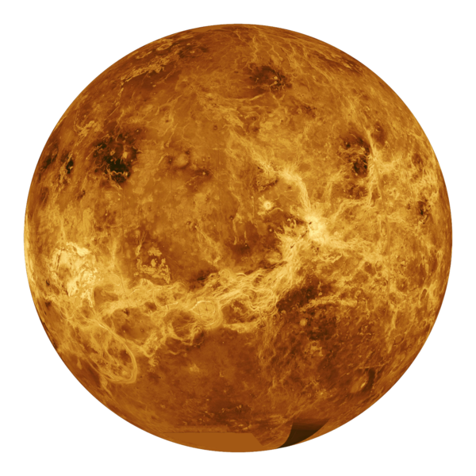

أولاً مجموعه الكواكب الداخلية: وهي كواكب صلبة قريبة من الشمس واحجامها صغيرة وسرعة دورانها عاليه ويطلق عليها اسم الكواكب الارضية لأنها مكونة من مواد صخرية مشابهة للارض وهي:
-
عطارد:
عطارد:
يعد عطارد اقرب الكواكب الى الشمس ويدور حول الشمس بسرعه كبيره مرة كل 88 يوم اي ان السنه على هذه الكوكب 88 يوم.

-
الزهرة (توأم الأرض):
الزهرة (توأم الأرض):
يعرف بتوأم الارض لتقاربه مع الارض في القطر والحجم والكتله وله غلاف غازي متماسك ويصعب اختراقه لذلك يصعب تحديد مدى دورانه حول نفسه ويتم دورته حول الشمس كل 225 يوم.
 -
الارض (الكوكب المائي):
الارض (الكوكب المائي):
وهو كوكبنا الذي نعيش فيه وهو من اجمل الكواكب التي تشاهدها من الفضاء ويشغل الماء 70.7% من مساحه كوكب الارض لذلك عرف بالكوكب المائي ويدور كوكب الارض حول الشمس في مدار ثابت حيث يكمل دورته حول الشمس كل 365 وربع..

-
المريخ (الكوكب الأحمر):
المريخ (الكوكب الأحمر):
: يعرف هذا الكوكب بالكوكب الأحمر لأنه يتميز بلونه الاحمر ويرجع ذلك الى غنى تربته باكاسيد الحديد الحمراء وهو اصغر حجما من الارض وتستغرق دورته حول الشمس 687 يوم.